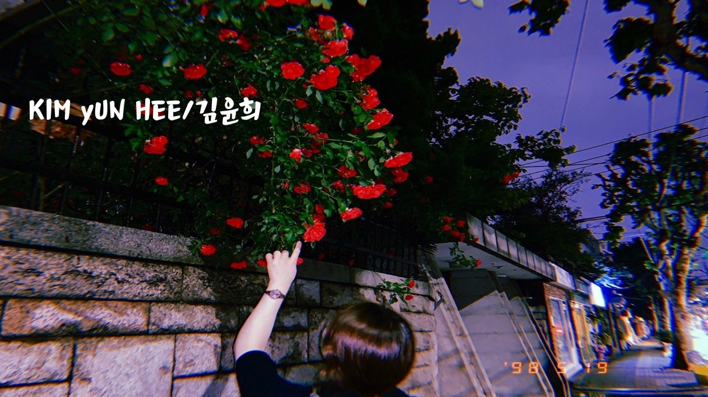

|

Kim yunhee / 김윤희
BIRTH / 99.11.12
CONSTELLATION / 전갈 자리
LIKES / 블루투스 스피커로 음악 듣기, 따릉이 타기,
친구들과 보드 게임하기, 추리소설 읽기
DISLIKES / 개구리, 먼지덩어리, 에어컨 바람
MOTTO / "Serendipity. 순간에 최선을 다하자"
MBTI / ENFJ-T(정의로운 사회운동가)
CROSS PROFILE
COLOR / 남색
SONG / 나에게로 떠나는 여행 - 버즈
BEVERAGE / 녹차라떼
CLOTHES / 검은색 세미정장
|